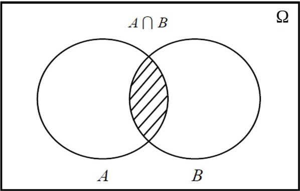
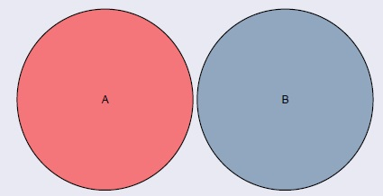
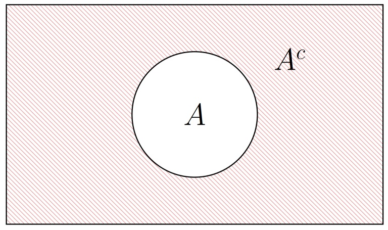
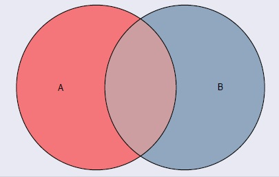

Bioestadística Fundamental
Departamento de Estadı́stica, Sede Bogotá
Clase 6
Contenido
Conceptos fundamentales
- Experimento aleatorio.
- Espacio muestral.
- Eventos y tipos de eventos.
- Espacios discretos y continuos.
Álgebra de eventos
- Unión, intersección y complemento.
- Diferencia y diferencia simétrica.
- Leyes de De Morgan y propiedades.
- Ejercicios integradores.
Experimento aleatorio, espacio muestral y eventos
- En la vida cotidiana nos enfrentamos constantemente a situaciones cuyo resultado no podemos predecir con certeza.
- ¿Cuál será el resultado de lanzar una moneda?
- ¿Qué tipo de sangre tendrá el próximo donante?
- ¿Cuántos días vivirá una nueva variedad de planta bajo ciertas condiciones?
- La probabilidad es la rama de las matemáticas que estudia y cuantifica la incertidumbre de estos fenómenos.
- Para construir ese lenguaje formal, necesitamos definir tres conceptos fundamentales:
- 🎲 Experimento aleatorio
- 📋 Espacio muestral
- 🎯 Eventos
Motivación
¿Cara o Sello?
No podemos saber de antemano cuál será el resultado, pero sí podemos listar todos los resultados posibles y asignarles probabilidades.
Experimento aleatorio
Un experimento aleatorio es aquel que, aun siendo realizado bajo condiciones fijas y controladas, puede producir diferentes resultados y no es posible predecir con certeza cuál ocurrirá.
Características del experimento aleatorio
- Se puede repetir bajo las mismas condiciones.
- El resultado de cada repetición es incierto.
- El conjunto de todos los resultados posibles es conocido de antemano.
Ejemplos de experimentos aleatorios
- 🪙 Lanzar una moneda y observar el resultado.
- 🎲 Lanzar un dado y observar la cara superior.
- 🩸 Seleccionar un donador de sangre y verificar su tipo sanguíneo.
- 🎓 Sortear un estudiante y preguntarle sobre su hábito de fumar.
- 💡 Seleccionar una lámpara de un lote y medir su tiempo de vida.
- 🌱 Plantar una semilla y registrar si germina o no.
Espacio muestral
El espacio muestral es el conjunto de todos los resultados posibles de un experimento aleatorio. Se denota por \(\Omega\).
Cada elemento \(\omega \in \Omega\) se denomina punto muestral o resultado elemental.
Ejemplos de espacios muestrales
- 🎲 Lanzar un dado y observar la cara superior: \[\Omega = \{1, 2, 3, 4, 5, 6\}\]
- 🩸 Tipo sanguíneo de un donador: \[\Omega = \{A, B, O, AB\}\]
- 🚬 Hábito de fumar de un estudiante: \[\Omega = \{Sí, No\}\]
- 💡 Tiempo de vida de una lámpara (en horas): \[\Omega = \{t \in \mathbb{R} : t \geq 0\}\]
- Los espacios muestrales pueden ser discretos (finitos o contablemente infinitos) o continuos (no contables).
Ejercicio: lanzar una moneda dos veces
Enunciado
- Se lanza una moneda dos veces. Si \(C\) indica cara y \(S\) indica sello, ¿cuál es el espacio muestral?
Solución
- \[\Omega = \{\omega_1, \omega_2, \omega_3, \omega_4\}\]
- donde:
- \(\omega_1 = (C, C)\)
- \(\omega_2 = (C, S)\)
- \(\omega_3 = (S, C)\)
- \(\omega_4 = (S, S)\)
Eventos
Un evento (o suceso) es cualquier subconjunto del espacio muestral \(\Omega\).
- Notación: los eventos se denotan con letras mayúsculas \(A, B, C, \ldots\)
- Evento imposible: \(\emptyset\) (conjunto vacío — nunca ocurre).
- Evento seguro: \(\Omega\) (espacio muestral completo — siempre ocurre).
Ejemplos de eventos
Experimento: lanzar un dado. \(\Omega = \{1,2,3,4,5,6\}\)
- \(A\): que salga número par \[A = \{2, 4, 6\} \subset \Omega\]
- \(B\): que salga un número mayor que 3 \[B = \{4, 5, 6\} \subset \Omega\]
- \(C\): que salga exactamente 1 \[C = \{1\} \subset \Omega\]
Evento imposible y evento seguro
- \(D\): que salga un número mayor que 10 \[D = \emptyset \quad \text{(evento imposible)}\]
- \(E\): que salga algún número entre 1 y 6 \[E = \Omega \quad \text{(evento seguro)}\]
Ejercicio: artículos de una fábrica
Enunciado
- De la línea de producción de una fábrica se retiran tres artículos, y cada uno es clasificado como Bueno (B) o Defectuoso (D).
- ¿Cuál es el espacio muestral? Describa el evento \(A\): “obtener exactamente dos artículos defectuosos”.
Solución
- \[\Omega = \{BBB,\; BBD,\; BDB,\; DBB,\; BDD,\; DBD,\; DDB,\; DDD\}\]
- El evento \(A\) (exactamente dos defectuosos): \[A = \{BDD,\; DBD,\; DDB\}\]
Operaciones con eventos
Al igual que con conjuntos, podemos combinar eventos para describir situaciones más complejas. Las operaciones fundamentales son: unión, intersección, complemento y diferencia.
Unión de eventos: \(A \cup B\)
Definición
- La unión \(A \cup B\) representa la ocurrencia de al menos uno de los eventos \(A\) o \(B\).
- \[A \cup B = \{\omega \in \Omega : \omega \in A \text{ o } \omega \in B\}\]
- Decimos que ocurre \(A \cup B\) si ocurre \(A\), o ocurre \(B\), o ambos ocurren simultáneamente.
Diagrama de Venn: \(A \cup B\)

Unión de tres eventos: \(A \cup B \cup C\)
Diagrama de Venn: \(A \cup B \cup C\)

Intersección de eventos: \(A \cap B\)
Definición
- La intersección \(A \cap B\) representa la ocurrencia simultánea de los eventos \(A\) y \(B\).
- \[A \cap B = \{\omega \in \Omega : \omega \in A \text{ y } \omega \in B\}\]
- Decimos que ocurre \(A \cap B\) solo si ocurren ambos \(A\) y \(B\) al mismo tiempo.
Diagrama de Venn: \(A \cap B\)

Intersección de tres eventos: \(A \cap B \cap C\)
Diagrama de Venn: \(A \cap B \cap C\)

Eventos disjuntos (mutuamente excluyentes)
Definición
- Dos eventos \(A\) y \(B\) son disjuntos (o mutuamente excluyentes) si no tienen elementos en común: \[A \cap B = \emptyset\]
- Si ocurre \(A\), es imposible que ocurra \(B\), y viceversa.
-
Ejemplo con un dado (\(\Omega = \{1,2,3,4,5,6\}\)):
\(A = \{2, 4, 6\}\) y \(C = \{1\}\) son disjuntos porque \(A \cap C = \emptyset\).
Diagrama de Venn: eventos disjuntos

Complemento de un evento: \(A^c\)
Definición
- El complemento de \(A\), denotado \(A^c\) (o \(A'\)), es el conjunto de todos los resultados de \(\Omega\) que no pertenecen a \(A\): \[A^c = \{\omega \in \Omega : \omega \notin A\}\]
- Se cumple siempre: \[A \cup A^c = \Omega \qquad A \cap A^c = \emptyset\]
- Ejemplo: \(A = \{2, 4, 6\}\) \(\Rightarrow\) \(A^c = \{1, 3, 5\}\)
Diagrama de Venn: complemento \(A^c\)

Ejemplo: operaciones con eventos
Dado: \(\Omega = \{1,2,3,4,5,6\}\), \(A = \{2,4,6\}\), \(B = \{4,5,6\}\), \(C = \{1\}\)
- Número par y mayor que 3: \[A \cap B = \{4, 6\}\]
- Número par e igual a 1: \[A \cap C = \emptyset\]
- Número par o mayor que 3: \[A \cup B = \{2, 4, 5, 6\}\]
- Número par o igual a 1: \[A \cup C = \{1, 2, 4, 6\}\]
- No salga un número par: \[A^c = \{1, 3, 5\}\]
- Número no par y no mayor que 3: \[(A \cup B)^c = \{1, 3\}\]
Propiedades de las operaciones con eventos
Propiedades de identidad
- \(A \cup \emptyset = A\)
- \(A \cup \Omega = \Omega\)
- \(A \cap \Omega = A\)
- \(A \cap \emptyset = \emptyset\)
Propiedades de complemento
- \(A \cup A^c = \Omega\)
- \(A \cap A^c = \emptyset\)
- \((A^c)^c = A\)
Propiedades conmutativas y asociativas
- \(A \cup B = B \cup A\)
- \(A \cap B = B \cap A\)
- \((A \cup B) \cup C = A \cup (B \cup C)\)
- \((A \cap B) \cap C = A \cap (B \cap C)\)
Propiedades distributivas
- \(A \cup (B \cap C) = (A \cup B) \cap (A \cup C)\)
- \(A \cap (B \cup C) = (A \cap B) \cup (A \cap C)\)
Leyes de De Morgan
Las Leyes de De Morgan establecen cómo se calcula el complemento de una unión o intersección de eventos.
Primera Ley
\[(A \cup B)^c = A^c \cap B^c\]
El complemento de la unión es la intersección de los complementos.
Segunda Ley
\[(A \cap B)^c = A^c \cup B^c\]
El complemento de la intersección es la unión de los complementos.
Ejercicio integrador
Enunciado
- Se lanza un dado. Sean los eventos:
- \(A = \{1, 2, 3\}\) (número menor que 4)
- \(B = \{2, 4, 6\}\) (número par)
- Calcule: \(A \cup B\), \(A \cap B\), \(A^c\), \((A \cup B)^c\) y verifique la primera Ley de De Morgan.
Solución
- \(A \cup B = \{1, 2, 3, 4, 6\}\)
- \(A \cap B = \{2\}\)
- \(A^c = \{4, 5, 6\}\)
- \((A \cup B)^c = \{5\}\)
- \(A^c \cap B^c = \{4,5,6\} \cap \{1,3,5\} = \{5\}\) ✓
Resumen
- 🎲 Experimento aleatorio: resultado incierto aun bajo condiciones fijas.
- 📋 Espacio muestral \(\Omega\): conjunto de todos los resultados posibles.
- 🎯 Evento: cualquier subconjunto de \(\Omega\).
- 🔗 Unión \(A \cup B\): al menos uno de los eventos ocurre.
- 🔀 Intersección \(A \cap B\): ambos eventos ocurren simultáneamente.
- 🔄 Complemento \(A^c\): todo lo que no está en \(A\).
Diferencia de eventos: \(A \setminus B\)
Definición
- La diferencia \(A \setminus B\) (también escrita \(A - B\)) es el conjunto de resultados que pertenecen a \(A\) pero no pertenecen a \(B\): \[A \setminus B = \{\omega \in \Omega : \omega \in A \text{ y } \omega \notin B\}\]
- Equivalentemente: \(A \setminus B = A \cap B^c\)
- Ejemplo: \(\Omega = \{1,2,3,4,5,6\}\), \(A = \{2,4,6\}\), \(B = \{4,5,6\}\) \[A \setminus B = \{2\}\]
Diagrama de Venn: \(A \setminus B\)

La región sombreada corresponde a los elementos de \(A\) que no están en \(B\).
Diferencia simétrica: \(A \triangle B\)
Definición
- La diferencia simétrica \(A \triangle B\) contiene los resultados que pertenecen a exactamente uno de los dos eventos, pero no a ambos: \[A \triangle B = (A \setminus B) \cup (B \setminus A)\]
- Equivalentemente: \[A \triangle B = (A \cup B) \setminus (A \cap B)\]
Ejemplo con un dado
- \(\Omega = \{1,2,3,4,5,6\}\), \(A = \{2,4,6\}\), \(B = \{4,5,6\}\)
- \(A \setminus B = \{2\}\), \(\quad B \setminus A = \{5\}\)
- \[A \triangle B = \{2, 5\}\]
- Interpretación: salir un número que es par o mayor que 3, pero no ambas cosas a la vez.
Partición del espacio muestral
Una colección de eventos \(\{A_1, A_2, \ldots, A_n\}\) forma una partición de \(\Omega\) si:
- Mutuamente excluyentes: \(A_i \cap A_j = \emptyset\) para todo \(i \neq j\)
- Exhaustivos: \(A_1 \cup A_2 \cup \cdots \cup A_n = \Omega\)
- No vacíos: \(A_i \neq \emptyset\) para todo \(i\)
Ejemplo agrícola (tipos de suelo): Al clasificar el suelo de una parcela, los eventos \(A_1 = \{\text{Arenoso}\}\), \(A_2 = \{\text{Arcilloso}\}\), \(A_3 = \{\text{Limoso}\}\), \(A_4 = \{\text{Franco}\}\) forman una partición de \(\Omega\) si cada parcela pertenece a exactamente una categoría.
Partición — ejemplo con clima
Experimento
- Se selecciona aleatoriamente una región cafetera de Colombia y se registra su tipo de clima.
- \[\Omega = \{\text{Cálido}, \text{Templado}, \text{Frío}\}\]
- Definamos: \(A_1 = \{\text{Cálido}\}\), \(A_2 = \{\text{Templado}\}\), \(A_3 = \{\text{Frío}\}\)
¿Es una partición?
- \(A_1 \cap A_2 = \emptyset\), \(A_1 \cap A_3 = \emptyset\), \(A_2 \cap A_3 = \emptyset\) ✓
- \(A_1 \cup A_2 \cup A_3 = \Omega\) ✓
- \(A_i \neq \emptyset\) para \(i = 1, 2, 3\) ✓
- Conclusión: \(\{A_1, A_2, A_3\}\) es una partición de \(\Omega\). Cada región pertenece a exactamente un tipo climático.
Ejercicio: cultivo de café
Enunciado
- Se selecciona aleatoriamente una planta de un cafetal y se clasifica su estado fitosanitario: Sana (Sa), con Plaga (Pl), con Enfermedad (En) o con Deficiencia nutricional (De).
- a) Defina el espacio muestral \(\Omega\).
- b) Defina 4 eventos de interés agronómico y expréselos como subconjuntos de \(\Omega\).
- c) ¿Forman los cuatro estados una partición de \(\Omega\)?
Contexto agronómico
- En Colombia, el café (Coffea arabica) es el principal cultivo de exportación. El monitoreo fitosanitario en zonas cálidas-húmedas es esencial para detectar la broca y la roya del café.
- Este ejercicio ilustra cómo la probabilidad permite modelar la incertidumbre en diagnósticos de campo.
Solución: cultivo de café
Espacio muestral y eventos
- \[\Omega = \{\text{Sa}, \text{Pl}, \text{En}, \text{De}\}\]
- \(A\): “la planta está sana” \(= \{\text{Sa}\}\)
- \(B\): “la planta tiene algún problema” \(= \{\text{Pl}, \text{En}, \text{De}\}\)
- \(C\): “la planta tiene plaga o enfermedad” \(= \{\text{Pl}, \text{En}\}\)
- \(D\): “la planta tiene deficiencia nutricional” \(= \{\text{De}\}\)
¿Forman partición?
- Los cuatro estados elementales \(\{\text{Sa}\}\), \(\{\text{Pl}\}\), \(\{\text{En}\}\), \(\{\text{De}\}\) sí forman una partición de \(\Omega\):
- Son mutuamente excluyentes: \(\{\text{Sa}\} \cap \{\text{Pl}\} = \emptyset\), etc.
- Son exhaustivos: su unión es \(\Omega\) ✓
- Nótese que \(B = A^c\), es decir, “tener algún problema” es el complemento de “estar sana”.
Ejercicio: lanzar dos dados
Enunciado
- Se lanzan dos dados distintos y se registra el par \((d_1, d_2)\) de resultados.
- a) ¿Cuántos elementos tiene \(\Omega\)?
- b) Defina \(A\) = “la suma es 7”.
- c) Defina \(B\) = “ambos dados muestran número par”.
- d) Calcule \(A \cap B\) e interprete.
Tabla del espacio muestral (primeras filas)
| \(d_1 \backslash d_2\) | 1 | 2 | 3 | 4 | 5 | 6 |
|---|---|---|---|---|---|---|
| 1 | (1,1) | (1,2) | (1,3) | (1,4) | (1,5) | (1,6) |
| 2 | (2,1) | (2,2) | (2,3) | (2,4) | (2,5) | (2,6) |
| 3 | (3,1) | (3,2) | (3,3) | (3,4) | (3,5) | (3,6) |
| 4 | (4,1) | (4,2) | (4,3) | (4,4) | (4,5) | (4,6) |
| 5 | (5,1) | (5,2) | (5,3) | (5,4) | (5,5) | (5,6) |
| 6 | (6,1) | (6,2) | (6,3) | (6,4) | (6,5) | (6,6) |
Solución: lanzar dos dados
Evento \(A\): “suma = 7”
- \(|\Omega| = 6 \times 6 = 36\) elementos.
- \[A = \{(1,6),(2,5),(3,4),(4,3),(5,2),(6,1)\}\]
- \(|A| = 6\)
Evento \(B\): “ambos pares”
- \[B = \{(2,2),(2,4),(2,6),(4,2),(4,4),(4,6),(6,2),(6,4),(6,6)\}\]
- \(|B| = 9\)
Intersección \(A \cap B\)
- Un resultado está en \(A \cap B\) si la suma es 7 y ambos dados son pares.
- La suma de dos números pares siempre es par, pero 7 es impar.
- \[A \cap B = \emptyset\]
- Conclusión: \(A\) y \(B\) son eventos mutuamente excluyentes.
Espacio muestral continuo en agronomía
En una finca de clima cálido del Tolima, se selecciona aleatoriamente un fruto de mango (Mangifera indica) y se registra su tiempo de maduración (en días) desde la floración.
- El espacio muestral es un intervalo continuo: \[\Omega = [60,\; 120] \subset \mathbb{R}\]
- Cada valor \(\omega \in [60, 120]\) representa un tiempo de maduración posible.
- \(\Omega\) contiene infinitos (no contables) puntos muestrales.
Eventos de interés
- \(A\): “maduración temprana” \(= [60, 80]\)
- \(B\): “maduración tardía” \(= (100, 120]\)
- \(C\): “maduración normal” \(= (80, 100]\)
- Nótese que \(\{A, C, B\}\) forma una partición de \(\Omega\), ya que son exhaustivos y mutuamente excluyentes.
Ejercicio: semillas de arroz — enunciado
Enunciado
- En un ensayo de laboratorio se seleccionan 4 semillas de arroz (Oryza sativa) de un lote de clima cálido. Cada semilla se clasifica como Viable (V) o No viable (N) según prueba de germinación.
- a) Construya el espacio muestral \(\Omega\) usando un árbol de posibilidades.
- b) Defina el evento \(A\) = “exactamente 2 semillas son viables” y liste sus elementos.
- c) Defina el evento \(B\) = “al menos 3 semillas son viables” y liste sus elementos.
Contexto
- El arroz es el principal cereal de consumo en Colombia. El control de calidad de semillas es fundamental para garantizar buenos rendimientos en los Llanos Orientales y la Costa Atlántica.
- \(|\Omega| = 2^4 = 16\) resultados posibles.
Solución: semillas de arroz
Espacio muestral completo \(\Omega\)
\(\Omega = \{\)VVVV, VVVN, VVNV, VVNN,
VNVV, VNVN, VNNV, VNNN,
NVVV, NVVN, NVNV, NVNN,
NNVV, NNVN, NNNV, NNNN\(\}\)
Eventos
- \(A\) (exactamente 2 viables): \[A = \{\text{VVNN, VNVN, VNNV, NVVN, NVNV, NNVV}\}\] \(|A| = \binom{4}{2} = 6\)
- \(B\) (al menos 3 viables): \[B = \{\text{VVVN, VVNV, VNVV, NVVV, VVVV}\}\] \(|B| = \binom{4}{3} + \binom{4}{4} = 4 + 1 = 5\)
- \(A \cap B = \emptyset\) ya que no es posible tener exactamente 2 viables y al menos 3 viables al mismo tiempo.
Ejercicio: temperaturas en cultivo de fresa
Enunciado
- En un cultivo de fresa (Fragaria ananassa) en la Sabana de Bogotá (clima frío, 2600 m.s.n.m.), se registra durante 3 días consecutivos si ocurre helada: Sí (H) o No (N).
- a) Defina el espacio muestral \(\Omega\).
- b) Defina \(A\) = “ocurre helada al menos un día”.
- c) Defina \(B\) = “no ocurre ninguna helada”.
- d) Verifique que \(B = A^c\).
Solución
- \(|\Omega| = 2^3 = 8\)
- \[\Omega = \{\text{HHH, HHN, HNH, HNN, NHH, NHN, NNH, NNN}\}\]
- \(B = \{\text{NNN}\}\) (ninguna helada)
- \(A = \Omega \setminus \{\text{NNN}\} = B^c\) ✓
- Las heladas son el principal riesgo climático para la fresa en la Sabana de Bogotá, lo que hace esencial modelar su probabilidad de ocurrencia.
Álgebra de eventos — resumen gráfico
Todas las operaciones fundamentales sobre eventos
\(A \cup B\)
Al menos uno ocurre
\(A \cap B\)
Ambos ocurren
\(A^c\)
\(A\) no ocurre
\(A \setminus B\)
\(A\) pero no \(B\)
\(A \triangle B\)
Exactamente uno
Recuerde: todas estas operaciones producen nuevos subconjuntos de \(\Omega\), es decir, nuevos eventos. La probabilidad se asigna a cada uno de estos subconjuntos.
Propiedades de De Morgan — demostración visual
\((A \cup B)^c = A^c \cap B^c\)
- Paso 1: \(A \cup B\) cubre todo lo que está en \(A\) o en \(B\).
- Paso 2: \((A \cup B)^c\) es lo que queda fuera de ambos = la zona exterior a los dos círculos en el diagrama de Venn.
- Paso 3: \(A^c \cap B^c\) también es la zona exterior a ambos círculos. ✓
Mnemotecnia: “el complemento de la unión es la intersección de los complementos”.
\((A \cap B)^c = A^c \cup B^c\)
- Paso 1: \(A \cap B\) es solo la zona central (intersección) del diagrama de Venn.
- Paso 2: \((A \cap B)^c\) cubre todo excepto esa zona central.
- Paso 3: \(A^c \cup B^c\) incluye lo que no está en \(A\) más lo que no está en \(B\), que es exactamente todo excepto la intersección. ✓
Mnemotecnia: “el complemento de la intersección es la unión de los complementos”.
Ejercicio De Morgan en cultivos
Contexto agronómico
- En un cultivo de maíz (Zea mays) de clima cálido en el Huila, se define:
- \(A\) = “la planta presenta plaga”
- \(B\) = “la planta está en estrés hídrico (sequía)”
- Interprete en contexto agronómico los eventos \((A \cup B)^c\) y \((A \cap B)^c\).
Interpretaciones (Leyes de De Morgan)
- \((A \cup B)^c = A^c \cap B^c\): la planta no tiene plaga y no tiene estrés hídrico — condición ideal de cultivo.
- \((A \cap B)^c = A^c \cup B^c\): la planta no sufre simultáneamente plaga y sequía — es decir, al menos uno de los dos problemas está ausente.
- Importancia: en manejo integrado de cultivos, identificar plantas libres de ambos estreses permite priorizar recursos de riego y control fitosanitario.
Ejercicio final integrador — cultivo de maíz (enunciado)
Situación
- Se clasifica el estado de una planta de maíz según dos criterios independientes: estado hídrico (Bien hidratada = H, Estresada = E) y estado fitosanitario (Sana = S, con Plaga = P, con Enfermedad = F).
- a) Construya el espacio muestral \(\Omega\).
- b) Defina los 5 eventos: \(A\)=“sana”, \(B\)=“con plaga”, \(C\)=“bien hidratada”, \(D\)=“estresada con problema”, \(E\)=“sana o hidratada”.
Eventos a calcular
- c) \(A \cup C\) (sana o bien hidratada)
- d) \(B \cap D\) (con plaga y estresada)
- e) \(A^c\) (no sana)
- f) \((A \cup B)^c\) (sin plaga y sin enfermedad… ¿es correcto esto?)
- g) \(C \setminus B\) (bien hidratada pero sin plaga)
- h) \(A \triangle C\) (sana o hidratada, pero no ambas)
Solución ejercicio final — parte 1
Espacio muestral y eventos base
- \(\Omega = \{(H,S),\,(H,P),\,(H,F),\,(E,S),\,(E,P),\,(E,F)\}\), \(|\Omega|=6\)
- \(A = \{(H,S),(E,S)\}\) (sana)
- \(B = \{(H,P),(E,P)\}\) (plaga)
- \(C = \{(H,S),(H,P),(H,F)\}\) (bien hidratada)
- \(D = \{(E,P),(E,F)\}\) (estresada con problema)
- \(E = A \cup C = \{(H,S),(E,S),(H,P),(H,F)\}\)
Operaciones c), d), e)
- \(A \cup C = \{(H,S),(E,S),(H,P),(H,F)\}\)
- \(B \cap D = \{(E,P)\}\) (plaga y estresada)
- \(A^c = \{(H,P),(H,F),(E,P),(E,F)\}\) (con plaga o enfermedad)
Solución ejercicio final — parte 2
Operaciones f), g), h)
- \(A \cup B = \{(H,S),(E,S),(H,P),(E,P)\}\)
- \((A \cup B)^c = \{(H,F),(E,F)\}\) (planta con enfermedad, sin ser sana ni tener plaga)
- \(C \setminus B = \{(H,S),(H,F)\}\) (bien hidratada pero sin plaga)
- \(A \triangle C\): elementos en \(A\) o \(C\) pero no en ambos: \(A \setminus C = \{(E,S)\}\), \(\; C \setminus A = \{(H,P),(H,F)\}\) \[A \triangle C = \{(E,S),(H,P),(H,F)\}\]
Verificación De Morgan
- \(A^c = \{(H,P),(H,F),(E,P),(E,F)\}\)
- \(B^c = \{(H,S),(H,F),(E,S),(E,F)\}\)
- \(A^c \cap B^c = \{(H,F),(E,F)\} = (A \cup B)^c\) ✓
- Verificado: la primera Ley de De Morgan se cumple en este espacio muestral.
Tipos de espacios muestrales
| Tipo | Característica | Ejemplo agrícola |
|---|---|---|
| Discreto finito | Número finito de resultados | Estado fitosanitario del café: \(\{\)Sana, Plaga, Enfermedad, Deficiencia\(\}\) |
| Discreto infinito | Contablemente infinito | Número de riegos hasta que germina la semilla de papa: \(\{1,2,3,\ldots\}\) |
| Continuo acotado | Intervalo de la recta real | Tiempo de maduración del mango: \(\Omega = [60, 120]\) días |
| Continuo no acotado | Semirrecta o recta real | Producción de leche diaria en finca: \(\Omega = [0, +\infty)\) litros |
Sigma-álgebra — introducción conceptual
Una \(\sigma\)-álgebra \(\mathcal{F}\) sobre \(\Omega\) es una familia de subconjuntos de \(\Omega\) que satisface tres condiciones básicas de cierre.
Condiciones (intuitivas)
- 1. El espacio completo pertenece: \(\Omega \in \mathcal{F}\)
- 2. Si un evento está en \(\mathcal{F}\), su complemento también: \(A \in \mathcal{F} \Rightarrow A^c \in \mathcal{F}\)
- 3. Uniones contables de eventos en \(\mathcal{F}\) también pertenecen a \(\mathcal{F}\)
¿Por qué importa?
- La probabilidad se define formalmente sobre la pareja \((\Omega, \mathcal{F})\).
- Garantiza que todas las operaciones con eventos (unión, intersección, complemento) produzcan eventos a los que se pueda asignar probabilidad.
- Para espacios finitos (como los de esta clase), la \(\sigma\)-álgebra más rica es el conjunto de partes \(\mathcal{P}(\Omega)\).
¿Por qué importa \(\Omega\) en investigación biológica?
Motivación aplicada
- Definir correctamente \(\Omega\) es el primer paso indispensable en cualquier estudio probabilístico o estadístico.
- Un \(\Omega\) mal definido conduce a probabilidades incorrectas, modelos inválidos y conclusiones erróneas.
- En agronomía, un \(\Omega\) bien definido permite diseñar experimentos de campo con rigor estadístico.
Ejemplos de impacto
- Ensayo de variedades de trigo (clima frío, Nariño): \(\Omega\) = todas las combinaciones de rendimiento posibles por hectárea.
- Control de calidad de café (exportación): \(\Omega\) = categorías de defectos según norma SCAA.
- Epidemiología vegetal: \(\Omega\) = conjunto de estados posibles de infección en una parcela.
- Sin \(\Omega\) no hay probabilidad. Sin probabilidad no hay inferencia estadística.
Conexión con probabilidad — anticipo
Habiendo definido \(\Omega\) y los eventos, el siguiente paso es asignar probabilidades. Formalmente, una función de probabilidad es una función \(P: \mathcal{F} \to [0,1]\) que satisface los axiomas de Kolmogórov.
Axiomas (anticipo)
- K1: \(P(A) \geq 0\) para todo evento \(A\)
- K2: \(P(\Omega) = 1\)
- K3: Si \(A \cap B = \emptyset\), entonces \(P(A \cup B) = P(A) + P(B)\)
Lo que ya tenemos (clase 6)
- Sabemos definir \(\Omega\) para experimentos discretos y continuos.
- Sabemos construir eventos y operar con ellos (unión, intersección, complemento, diferencia).
- Estamos listos para asignar y calcular probabilidades sobre estos eventos.
Ejercicio de repaso — Verdadero o Falso
1. Si \(A \subset B\), entonces \(A \cap B = A\). ✓ Verdadero
2. El evento vacío \(\emptyset\) es imposible, por lo que no pertenece a \(\Omega\). ✗ Falso (\(\emptyset \subset \Omega\))
3. Para cualquier evento \(A\): \((A^c)^c = A\). ✓ Verdadero
4. Si \(A \cap B = \emptyset\), entonces \(A\) y \(B\) son complementarios. ✗ Falso (falta \(A \cup B = \Omega\))
5. \((A \cup B)^c = A^c \cap B^c\) es la primera Ley de De Morgan. ✓ Verdadero
Resumen visual — conceptos principales
| Concepto | Definición | Notación | Ejemplo (maíz, Huila) |
|---|---|---|---|
| Experimento aleatorio | Resultado incierto bajo condiciones fijas | — | Clasificar estado hídrico y sanitario |
| Espacio muestral | Todos los resultados posibles | \(\Omega\) | \(\{(H,S),(H,P),(H,F),(E,S),(E,P),(E,F)\}\) |
| Evento | Subconjunto de \(\Omega\) | \(A, B, \ldots\) | “planta sana”: \(\{(H,S),(E,S)\}\) |
| Unión | Al menos uno ocurre | \(A \cup B\) | Sana o bien hidratada |
| Intersección | Ambos ocurren | \(A \cap B\) | Sana y bien hidratada |
| Complemento | Todo lo que no está en \(A\) | \(A^c\) | No sana = \(\{(H,P),(H,F),(E,P),(E,F)\}\) |
Bibliografía sugerida
Textos principales
-
Walpole, R. E., Myers, R. H., & Myers, S. L. (2012). Probabilidad y estadística para ingeniería y ciencias (9.ª ed.). Pearson.
Capítulos 2–3: fundamentos de probabilidad y espacio muestral. -
Ross, S. M. (2014). Introduction to Probability and Statistics for Engineers and Scientists (5th ed.). Elsevier.
Capítulo 3: axiomas de probabilidad y eventos.
Textos complementarios
-
Devore, J. L. (2016). Probabilidad y estadística para ingeniería y ciencias (9.ª ed.). Cengage Learning.
Capítulo 2: probabilidad. -
Montgomery, D. C., & Runger, G. C. (2018). Applied Statistics and Probability for Engineers (7th ed.). Wiley.
Excelente para aplicaciones en ingeniería y ciencias agrarias. - Material UNAL: notas de clase del Departamento de Estadística, Sede Bogotá.
Experimentos aleatorios en agronomía colombiana
Clima cálido
- Café (Antioquia, Huila): clasificar calidad del grano: Supremo, Excelso, Pasilla. \[\Omega = \{\text{Supremo}, \text{Excelso}, \text{Pasilla}\}\]
- Mango (Tolima): medir el peso del fruto en gramos. \[\Omega = (0, +\infty) \subset \mathbb{R}\]
- Maíz (Llanos Orientales): registrar si una mazorca supera 250 g. \[\Omega = \{\text{Sí}, \text{No}\}\]
Clima frío
- Papa (Cundinamarca): seleccionar un tubérculo y clasificarlo: Primera, Segunda, Tercera. \[\Omega = \{\text{Primera}, \text{Segunda}, \text{Tercera}\}\]
- Trigo (Boyacá): medir altura de planta en cm al momento de cosecha. \[\Omega = [60, 130] \subset \mathbb{R}\]
- Fresa (Sabana de Bogotá): registrar días hasta primera cosecha. \[\Omega = \{45, 46, 47, \ldots, 90\}\]
Conteo del espacio muestral — técnicas básicas
Para espacios discretos finitos, calcular \(|\Omega|\) es esencial antes de enumerar los eventos.
Regla de la multiplicación
- Si un experimento tiene \(k\) etapas con \(n_1, n_2, \ldots, n_k\) resultados respectivamente, el total de resultados es: \[|\Omega| = n_1 \times n_2 \times \cdots \times n_k\]
- Ejemplo: 4 semillas de arroz, cada una V o N: \[|\Omega| = 2^4 = 16\]
Ejemplos agrícolas
- Clasificar 3 plantas de café (Sana/Problema): \(|\Omega| = 2^3 = 8\)
- Registrar clima (3 tipos) y suelo (4 tipos) de una parcela: \(|\Omega| = 3 \times 4 = 12\)
- Dos dados: \(|\Omega| = 6 \times 6 = 36\)
Eventos elementales y no elementales
Evento elemental
- Un evento elemental (o simple) contiene exactamente un punto muestral: \[\{\omega\} \subset \Omega, \quad \omega \in \Omega\]
- Ejemplo: \(\Omega = \{1,2,3,4,5,6\}\) \[\{3\}, \{5\}, \{6\} \text{ son eventos elementales}\]
- Si \(|\Omega| = n\), hay exactamente \(n\) eventos elementales.
Evento compuesto
- Un evento compuesto contiene dos o más puntos muestrales.
- Ejemplo: “salir par” \(= \{2, 4, 6\}\)
- Todo evento compuesto puede expresarse como unión de eventos elementales: \[A = \{2,4,6\} = \{2\} \cup \{4\} \cup \{6\}\]
- El número total de eventos posibles (incluyendo \(\emptyset\) y \(\Omega\)) en un espacio con \(n\) elementos es \(2^n\).
Subconjuntos notables de \(\Omega\)
Número de subconjuntos
- Si \(|\Omega| = n\), entonces el número de posibles eventos (subconjuntos) es: \[|\mathcal{P}(\Omega)| = 2^n\]
- Para el dado: \(|\Omega| = 6 \Rightarrow 2^6 = 64\) eventos posibles.
- Para 4 semillas de arroz: \(|\Omega| = 16 \Rightarrow 2^{16} = 65{,}536\) eventos posibles.
Ejemplo: estado fitosanitario del café
- \(\Omega = \{\text{Sa}, \text{Pl}, \text{En}, \text{De}\}\), \(|\Omega| = 4\)
- Número de eventos posibles: \(2^4 = 16\)
- Incluyen: \(\emptyset\), \(\{\text{Sa}\}\), \(\{\text{Pl}\}\), \(\{\text{En}\}\), \(\{\text{De}\}\), \(\{\text{Sa},\text{Pl}\}\), \(\ldots\), \(\Omega\)
- En la práctica, el investigador define solo los eventos que tienen interpretación agronómica relevante.
Relación de contenencia entre eventos
Definición
- Decimos que \(A\) está contenido en \(B\) (se escribe \(A \subset B\)) si todo resultado de \(A\) también pertenece a \(B\): \[A \subset B \iff (\omega \in A \Rightarrow \omega \in B)\]
- Si \(A \subset B\), entonces la ocurrencia de \(A\) implica la ocurrencia de \(B\).
Ejemplo agronómico
- En el cultivo de papa (clima frío, Boyacá), \(\Omega = \{\text{Primera}, \text{Segunda}, \text{Tercera}\}\).
- \(A = \{\text{Primera}\}\), \(\quad B = \{\text{Primera}, \text{Segunda}\}\)
- \(A \subset B\) porque Primera \(\in B\) ✓
- Interpretación: si el tubérculo es de Primera calidad, entonces también satisface la condición de ser Primera o Segunda.
- Consecuencia útil: \(A \subset B \Rightarrow A \cap B = A\) y \(A \cup B = B\).
Igualdad de eventos
Dos eventos \(A\) y \(B\) son iguales (\(A = B\)) si y solo si \(A \subset B\) y \(B \subset A\), es decir, si tienen exactamente los mismos elementos.
Verificación mediante De Morgan
- Para verificar que \((A \cup B)^c = A^c \cap B^c\), se puede mostrar que cada conjunto está contenido en el otro.
- Paso 1: \((A \cup B)^c \subset A^c \cap B^c\): si \(\omega \notin A \cup B\), entonces \(\omega \notin A\) y \(\omega \notin B\).
- Paso 2: \(A^c \cap B^c \subset (A \cup B)^c\): si \(\omega \notin A\) y \(\omega \notin B\), entonces \(\omega \notin A \cup B\).
Ejemplo numérico
- \(\Omega = \{1,2,3,4,5,6\}\), \(A = \{1,2\}\), \(B = \{2,3\}\)
- \(A \cup B = \{1,2,3\}\), \((A \cup B)^c = \{4,5,6\}\)
- \(A^c = \{3,4,5,6\}\), \(B^c = \{1,4,5,6\}\)
- \(A^c \cap B^c = \{4,5,6\} = (A \cup B)^c\) ✓
Ejercicio: cultivo de papa en Boyacá
Enunciado
- En un cultivo de papa (Solanum tuberosum) en clima frío de Boyacá, se seleccionan aleatoriamente dos tubérculos y se clasifica cada uno como: Primera (P), Segunda (S) o Descarte (D).
- a) Construya \(\Omega\).
- b) Defina \(A\) = “al menos un tubérculo es Primera”.
- c) Calcule \(A^c\).
Solución
- \(|\Omega| = 3^2 = 9\)
- \(\Omega = \{(P,P),(P,S),(P,D),(S,P),(S,S),(S,D),(D,P),(D,S),(D,D)\}\)
- \(A = \{(P,P),(P,S),(P,D),(S,P),(D,P)\}\)
- \(A^c\) = “ningún tubérculo es Primera”: \[A^c = \{(S,S),(S,D),(D,S),(D,D)\}\]
Propiedades de absorción e idempotencia
Leyes de idempotencia
- \(A \cup A = A\)
- \(A \cap A = A\)
- Unir o intersectar un evento consigo mismo no cambia el evento.
Leyes de absorción
- Si \(A \subset B\): \(\quad A \cup B = B\)
- Si \(A \subset B\): \(\quad A \cap B = A\)
Contexto: trigo en Boyacá
- \(\Omega = \{\text{Alto rendimiento}, \text{Medio rendimiento}, \text{Bajo rendimiento}\}\)
- \(A = \{\text{Alto}\}\), \(\quad B = \{\text{Alto}, \text{Medio}\}\)
- \(A \subset B\) \(\Rightarrow\) \(A \cup B = B = \{\text{Alto}, \text{Medio}\}\)
- \(A \cap B = A = \{\text{Alto}\}\)
- Cuando un evento implica al otro, las operaciones se simplifican elegantemente.
Aplicación: diseño de experimentos en campo
Del experimento al modelo probabilístico
- Todo diseño experimental en agronomía comienza con la definición precisa de:
- 1. El experimento aleatorio — ¿qué se observa o mide?
- 2. El espacio muestral \(\Omega\) — ¿cuáles son todos los resultados posibles?
- 3. Los eventos de interés — ¿qué condiciones o resultados queremos estudiar?
Ejemplo: ensayo de variedades de arroz
- Experimento: sembrar 5 variedades de arroz en el Tolima y registrar cuál produce mayor rendimiento.
- \(\Omega = \{V_1, V_2, V_3, V_4, V_5\}\)
- \(A\) = “variedad mejorada gana” \(= \{V_3, V_4\}\)
- Con \(\Omega\) y los eventos definidos, el paso siguiente es asignar probabilidades basadas en datos históricos o modelos.
Diferencia de eventos — ejemplo con cultivo de arroz
Contexto
- En un lote de arroz (clima cálido), se monitorean plantas para detectar dos problemas: Brusone (enfermedad fúngica) o Sogata (plaga de insecto).
- \(\Omega = \{\text{Sana}, \text{Brusone}, \text{Sogata}, \text{Ambos}\}\)
- \(A = \{\text{Brusone}, \text{Ambos}\}\) (tiene Brusone)
- \(B = \{\text{Sogata}, \text{Ambos}\}\) (tiene Sogata)
Operaciones
- \(A \setminus B = \{\text{Brusone}\}\) — solo Brusone, sin Sogata
- \(B \setminus A = \{\text{Sogata}\}\) — solo Sogata, sin Brusone
- \(A \triangle B = \{\text{Brusone}, \text{Sogata}\}\) — exactamente uno de los dos problemas
- Importancia: identificar plantas con exactamente un problema permite focalizar el tratamiento (fungicida vs. insecticida) sin aplicar ambos a la vez.
Ejercicio de verificación — propiedades distributivas
Enunciado
- Sea \(\Omega = \{1,2,3,4,5,6,7,8\}\) el espacio muestral de un experimento agronómico codificado. Defina:
- \(A = \{1,2,3,4\}\), \(B = \{3,4,5,6\}\), \(C = \{5,6,7,8\}\)
- Verifique: \(A \cap (B \cup C) = (A \cap B) \cup (A \cap C)\)
Solución
- \(B \cup C = \{3,4,5,6,7,8\}\)
- \(A \cap (B \cup C) = \{1,2,3,4\} \cap \{3,4,5,6,7,8\} = \{3,4\}\)
- \(A \cap B = \{3,4\}\)
- \(A \cap C = \emptyset\) (no comparten elementos)
- \((A \cap B) \cup (A \cap C) = \{3,4\} \cup \emptyset = \{3,4\}\) ✓
- La propiedad distributiva queda verificada.